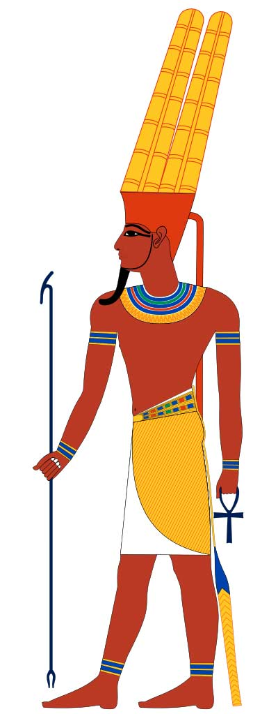
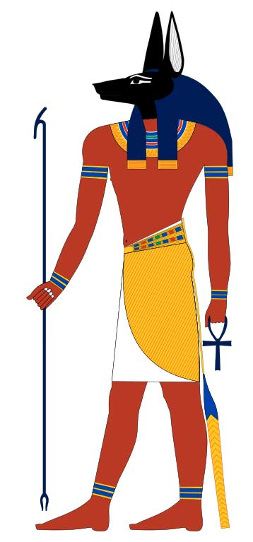

По утверждению некоторых исследователей, в Древнем Египте было пять тысяч богов. Столь огромное их количество связано с тем, что в каждом из многочисленных местных городов были свои боги. Поэтому не следует удивляться сходству функций многих из них. В нашем списке мы по возможности старались не только дать описание того или иного небожителя, но и указать центр, в котором он более всего почитался. Помимо богов перечислены некоторые монстры, духи и волшебные существа. Список даёт персонажи в алфавитном порядке. Имена некоторых богов оформлены как гиперссылки, ведущие на подробные статьи о них.
Амат – ужасное чудовище с туловищем и передними ногами львицы, задними ногами бегемота и головой крокодила. Оно обитало в огненном озере подземного царства мёртвых (Дуата) и пожирало души умерших, которые на суде Осириса признавались неправедными.
Амон – почитавшийся в городе Фивы бог воздуха и ветра. Его имя буквально означает «невидимый». Амон приобрёл значение верховного бога Египта при фараонах XII и XVIII династий, имевших резиденцию в Фивах. Многие из них носили имена Аменемхет («Амон во главе») и Аменхотеп («Амон доволен»). Амон – всепроникающая, сокрытая душа, которая даёт дыхание жизни всему сущему. Ему были посвящены великолепные Карнакский и Луксорский храмы. «Небесный» характер Амона облегчил его слияние с Солнцем-Ра в едином образе Амона-Ра.
Древнеегипетский бог Амон
Анубис – первоначально главный бог подземного мира, позже вытесненный с этого места Осирисом. Сохранил многие функции, связанные с умершими: был их провожатым в мёртвое царство, взвешивал душу покойного на весах загробного мира, определяя, достойна ли она там остаться, считался покровителем искусства мумификации. Изображался с головой шакала (африканского золотого волка) или целиком в «шакальем» виде – сидя сверху гробниц, как их охранитель.
Бог Анубис